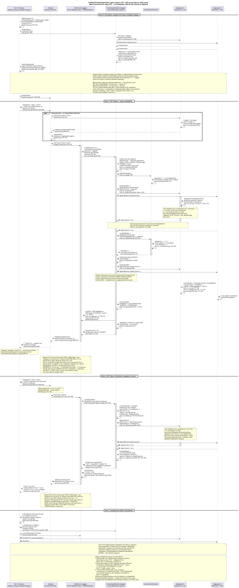

Диаграмма последовательностей фактического пути кода; GET — по ReadIndex (Raft §8), без записи в журнал. Источник: BasicPutGetSingleClient.puml, тест: pkg/system_test.go:35-46, открыть SVG в новой вкладке
pkg/system_test.go:35-46
